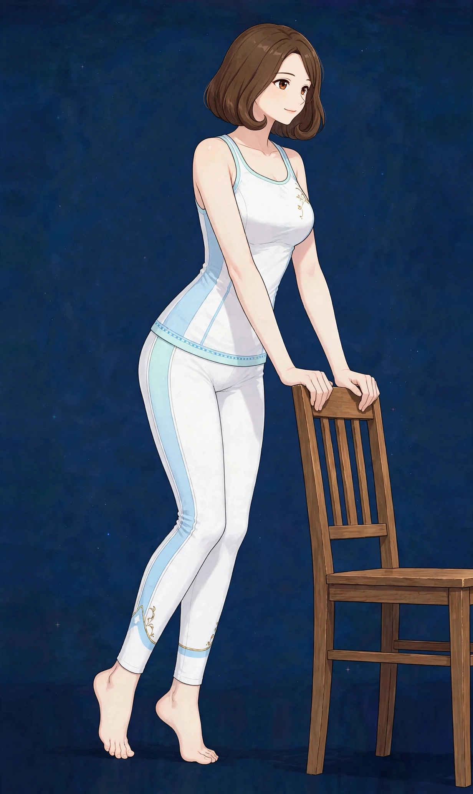

脚のラインとむくみ感ケア｜ふくらはぎポンプを味方にする美容ケア・パーツ別

夕方に感じる脚の重さやラインの印象には、ふくらはぎのポンプ機能が大きく関係します。仕組みと、日常でできるポンプを働かせる工夫を紹介します。
#脚 ライン ケア#脚 むくみ感#ふくらはぎ ポンプ#夕方 脚 パンパン ケア
ふくらはぎは「第二の心臓」
ふくらはぎの筋肉は、歩くたびに収縮して、下半身の血液や水分を上へ押し戻すポンプの役割を果たします。立ちっぱなし・座りっぱなしではこのポンプが働かず、夕方のむくみ感や重だるさにつながります。
脚のラインの印象は、その日の巡りの状態でも変わります。朝と夕方で脚の見え方が違うのは、このためです。
ポンプを働かせる工夫
立っている時間にはかかとの上げ下げを、座っている時間には足首を回す・つま先を上下させる動きを組み込みます。どちらも「ながら」でできる小さな動きです。
帰宅後は湯船で温めてから、ふくらはぎを下から上へさするケアを。足を少し高い位置に置いて休む時間も有効です。
当店でのケア
当店のオイルマッサージでは、足裏からふくらはぎ、太ももまで、巡りを意識したストロークで脚全体をケアします。「脚のむくみ」や「足の疲れ」のお悩みページもあわせてご覧ください。
関連するお悩みページ
関連する経絡ページ
ほかのブログ記事
さらに学びたい方へ：現場で使われる専門書（PR）
このページのテーマに合わせて選んだ本と、当店の施術でも参考にしている専門書です。


※本ブロックのリンクはAmazonアソシエイト・プログラムおよび楽天アフィリエイトによる広告リンクです。使用感の保証をするものではありません。